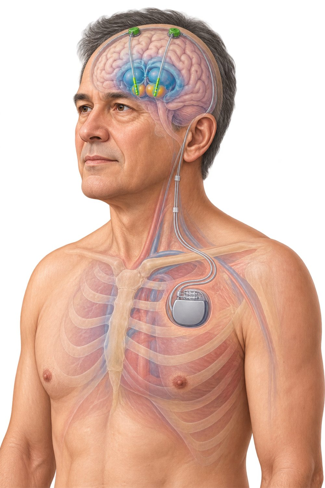
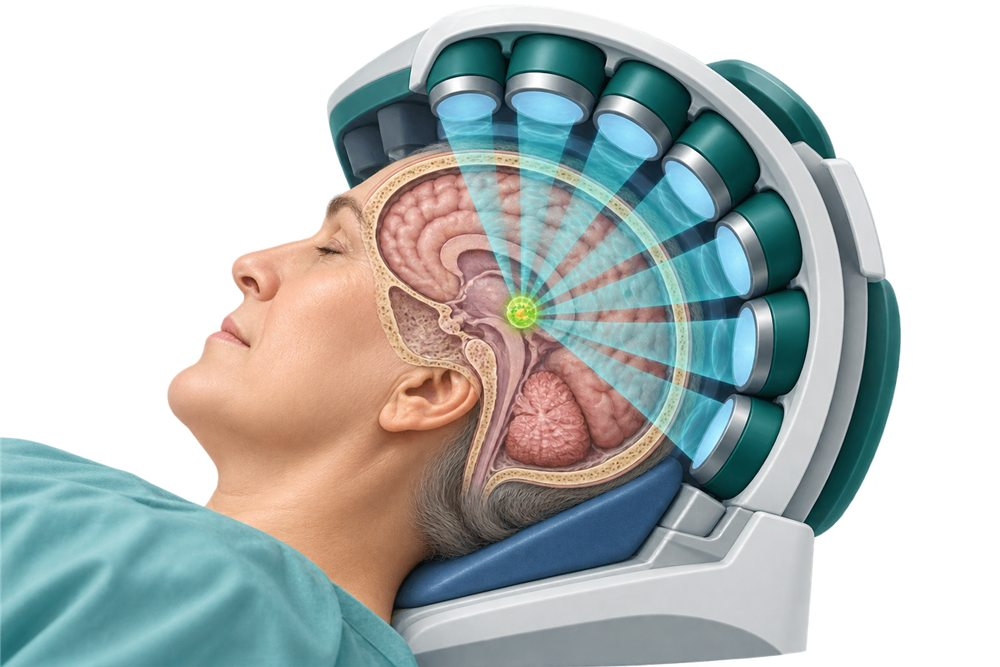

De un vistazo
Las tres técnicas actúan sobre circuitos cerebrales del movimiento, pero de forma muy distinta.
| Pregunta | DBS | HIFU | RF |
|---|---|---|---|
| ¿Deja un implante? | Sí, electrodos y generador | No | No, sin generador ni batería |
| ¿Requiere incisión? | Sí, es una cirugía | No | Sí, un pequeño orificio en el cráneo |
| ¿Se puede ajustar después? | Sí, mediante programación | No, la lesión es permanente | No, la lesión es permanente |
| Experiencia en Parkinson | Amplia | Menor que con DBS | Histórica; uso moderno mucho menor |
Ninguna detiene la progresión del Parkinson. La indicación depende de los síntomas, la respuesta a medicamentos, la evaluación de un equipo especializado y la disponibilidad en Chile.
Cada tratamiento en detalle
Elige una técnica para ver cómo funciona, cuándo se evalúa, fortalezas y límites.
Estimulación cerebral profunda (DBS)
Una terapia implantable y ajustable para controlar síntomas motores en personas cuidadosamente seleccionadas.
Primera aplicación moderna de alta frecuencia en Parkinson
Personas tratadas mundialmente, considerando todas las indicaciones
Procedimientos estimados en el mundo
Cómo leer las cifras: Las cifras mundiales incluyen Parkinson y otras indicaciones. No existe un registro mundial único exclusivo para Parkinson.
¿Dónde se instala el sistema DBS?
Los electrodos se sitúan en zonas profundas del cerebro. Un cable pasa bajo la piel por detrás de la oreja y el cuello hasta un generador colocado habitualmente bajo la piel del pecho.
Esquema educativo: la ubicación exacta y el lado tratado se definen individualmente.
Cómo funciona
- Electrodos: Uno o dos electrodos se implantan en blancos cerebrales como el núcleo subtalámico o el globo pálido interno.
- Generador: Un dispositivo bajo la piel entrega impulsos eléctricos y puede requerir recambio o recarga.
- Programación: La estimulación se ajusta después de la cirugía según respuesta, síntomas y efectos adversos.
Cuándo puede considerarse
- Cuándo se evalúa: Fluctuaciones motoras, períodos OFF, discinesias o temblor que ya no se controlan adecuadamente con medicamentos.
- Mejor respuesta esperada: Los síntomas motores que responden a levodopa suelen tener mayor probabilidad de mejorar con DBS.
- Evaluación integral: La selección requiere neurología, neurocirugía, neuropsicología y revisión de expectativas y apoyo familiar.
Fortalezas
- Es ajustable con el tiempo.
- Puede tratar ambos lados del cuerpo.
- No crea intencionalmente una lesión cerebral.
- Existe amplia experiencia clínica acumulada.
Límites y riesgos
- Requiere cirugía y un implante permanente.
- Necesita programación y controles periódicos.
- Existen riesgos de hemorragia, infección y efectos de estimulación.
- No detiene la progresión del Parkinson.
Fuentes: NINDS Cleveland Clinic Indiana University Medicine Medtronic
Ultrasonido focalizado guiado por resonancia (HIFU)
Una lesión cerebral precisa, realizada sin incisión ni dispositivo implantado.
Primeras experiencias clínicas publicadas en Parkinson
Tratamientos Exablate en trastornos del movimiento
Centros reportados mundialmente por el fabricante en 2026
Cómo leer las cifras: Los 30.000+ procedimientos incluyen principalmente temblor esencial y otras indicaciones; el total exclusivo para Parkinson no se publica por separado.
¿Dónde actúa el HIFU?
Los haces de ultrasonido atraviesan el cráneo intacto desde distintos ángulos y convergen en un pequeño objetivo cerebral, guiados y controlados mediante resonancia magnética.
HIFU no deja electrodos, cables, batería ni otro dispositivo implantado.
Cómo funciona
- Resonancia: El paciente permanece dentro de un equipo de resonancia magnética que permite localizar el blanco y vigilar la temperatura.
- Ultrasonido: Múltiples haces convergen en un punto profundo del cerebro y elevan su temperatura.
- Lesión: Se crea una lesión pequeña, localizada y permanente; no queda una batería ni un electrodo implantado.
Cuándo puede considerarse
- Cuándo se evalúa: Temblor resistente a medicamentos o complicaciones motoras seleccionadas, según el blanco cerebral autorizado.
- Sin implante: Puede considerarse cuando la persona no desea o no puede recibir un dispositivo permanente.
- Factibilidad: La anatomía del cráneo, la lateralidad y las normas locales determinan si el procedimiento puede realizarse.
Fortalezas
- No requiere incisión ni implante.
- Habitualmente se realiza en una sesión.
- La respuesta puede evaluarse durante el procedimiento.
- La recuperación suele ser más rápida.
Límites y riesgos
- La lesión no puede ajustarse ni revertirse.
- No todos los cráneos son técnicamente tratables.
- Puede alterar marcha, habla o sensibilidad.
- La experiencia en Parkinson es menor que con DBS.
Fuentes: U.S. FDA Parkinson’s Foundation Insightec Revisión clínica
Lesión estereotáctica por radiofrecuencia (RF)
Una técnica histórica que mantiene un lugar en situaciones seleccionadas.
Expansión de las técnicas estereotácticas lesionales
Operaciones estereotácticas históricas reportadas hasta fines de los años 50
No existe un total mundial moderno específico para RF y Parkinson
Cómo leer las cifras: El dato histórico de >37.000 reúne procedimientos estereotácticos para trastornos del movimiento; no corresponde exclusivamente a RF ni a Parkinson.
Cómo funciona
- Localización: Un marco o sistema de navegación estereotáctica permite identificar el blanco cerebral.
- Sonda: Una sonda atraviesa un pequeño orificio en el cráneo y genera calor controlado.
- Tipos: Según el blanco puede realizarse como talamotomía, palidotomía o subtalamotomía.
Cuándo puede considerarse
- Síntomas asimétricos: Puede evaluarse cuando predomina un lado del cuerpo y existe un objetivo clínico bien definido.
- Alternativa: Puede ser relevante si DBS no está disponible, no es aceptada o el seguimiento de un implante es una barrera.
- Cautela: La lesión es permanente; los procedimientos bilaterales exigen una evaluación especialmente cuidadosa.
Fortalezas
- No requiere generador ni batería.
- Su costo tecnológico suele ser menor.
- El efecto sobre el circuito tratado es inmediato.
- Existe experiencia anatómica y quirúrgica acumulada.
Límites y riesgos
- La lesión es permanente y no ajustable.
- Existe riesgo de hemorragia o déficit neurológico.
- Su uso moderno es mucho menor que DBS.
- La evidencia y disponibilidad varían entre centros.
Fuentes: Movement Disorder Society PubMed 9613759 Revisión clínica 2024 Practical Neurology
¿Dónde se realizan en Chile?
Centros con experiencia informada en DBS
Programas públicos y privados, equipos referentes y actividad informada, con fecha y fuente.
Ver centros en Chile